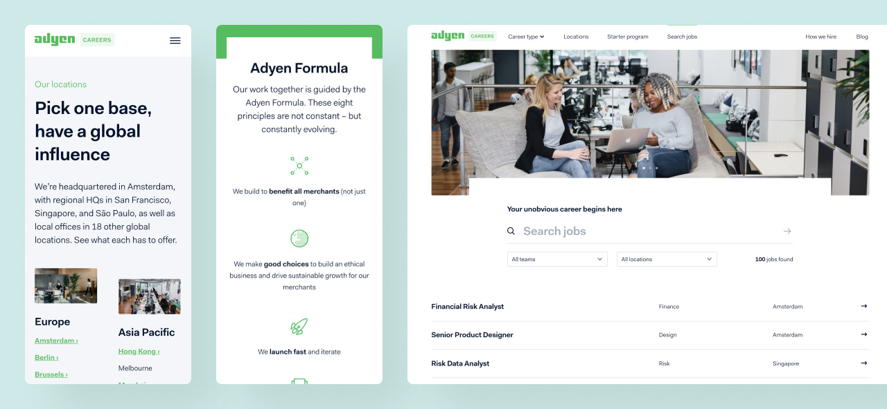

Adyen, a rapidly scaling global financial technology company, needed a unified and compelling platform to attract top-tier talent worldwide. Their existing career presence was fragmented, hindering their ability to showcase their unique culture and diverse opportunities.
The Problem
Adyen's rapid growth meant a continuous need for exceptional talent. However, their recruitment ecosystem was disjointed across various regional sites and external job boards. This inconsistency created a diluted brand experience for potential candidates and made it challenging for Adyen to effectively communicate its employer value proposition (EVP) on a global scale. Candidates struggled to find relevant information, understand the company culture, or navigate the application process seamlessly.
The Solution

I led the UX design and strategic direction for Adyen's Global Career Hub, a centralized, intuitive platform designed to be the definitive destination for all aspiring Adyen employees. Key contributions and methodologies included:
Employer Brand & Candidate Journey Mapping: Collaborating with HR and marketing teams to distill Adyen's unique culture, values, and career paths into a cohesive digital narrative. We performed extensive candidate journey mapping to identify pain points and opportunities across the entire recruitment funnel, from initial discovery to application and onboarding.
User Research & Persona Development: Conducted user research with potential candidates and internal stakeholders to build detailed personas, ensuring the platform addressed diverse needs and expectations globally.
Personalized Experiences & Interaction Design: Designing features that allowed candidates to filter opportunities, explore team insights, and access tailored content relevant to their skills and interests. Focus was placed on intuitive interaction design for a smooth application flow.
Scalable Design System Development: Establishing and evolving a robust design system to ensure consistency in UI/UX across all global touchpoints and to enable efficient scaling and localization of content for various markets. This included UI component libraries and guidelines.
Agile Collaboration & Prototyping: Guiding cross-functional teams through agile development cycles, utilizing prototyping and iterative feedback to refine solutions, and ensuring seamless technical integration with Adyen's Applicant Tracking System.
The Impact
The Global Career Hub significantly elevated Adyen's recruitment efforts, resulting in:
Enhanced Employer Brand Perception: A unified and engaging platform effectively communicated Adyen's innovative culture and career opportunities, attracting more qualified candidates.
Improved Candidate Experience: Streamlined navigation and relevant content led to a more positive and efficient journey for applicants.
Increased Global Talent Acquisition: The hub served as a powerful tool for attracting diverse talent across different geographies, supporting Adyen's ambitious growth targets.
Operational Efficiency: Centralizing recruitment efforts reduced administrative overhead and improved collaboration between global hiring teams.
Selected NDA work (further details and content upon request).